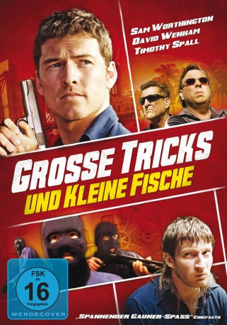
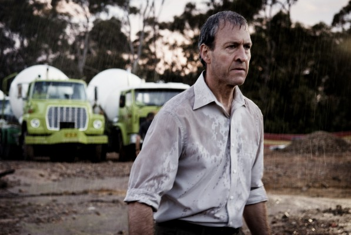

#3219 Große Tricks und kleine Fische
Alternativ: Gettin' Square
 
 IMDB-Wertung: 6.8 / 10
IMDB-Wertung: 6.8 / 10  Metascore: 0
Metascore: 0 
Als der Kleinganove Barry (Sam Worthington) nach acht Jahren aus dem Knast entlassen wird, fasst er mit seinem besten Kumpel Kumpel Spit (David Wenham) den Entschluss, endlich sauber zu bleiben. Er fängt als Koch bei Dabba Barrington (Timothy Spall) an, der sein Restaurant aber mit schmutzigen Geschäften finanziert hat und daher die Bundespolizei an den Hacken hat. Auch Spit kann die kriminelle Ader nicht ablegen und kommt wieder mit Drogen in Kontakt. Und auch Barry hat eigentlich noch alte Rechnungen mit einem Gangsterboss und einem korrupten Cop zu begleichen. So soll es doch noch einmal ein finaler großer Coup sein.
Jahr: 2003
Dauer: 102 Minuten
FSK: 16
Land: Australien Studio: Kurt MediaTonspuren: DTS - ,
Untertitel: Deutsch,
Auflösung: 1080p (1920x1040) Größe: 9594 MB
Genre: Thriller, Komödie, Krimi
Regisseur: Jonathan Teplitzky
Drehbuch: Chris Nyst
Soundtrack:
Darsteller:
 Sam Worthington als Barry 'Wattsy' Wirth
Sam Worthington als Barry 'Wattsy' Wirth David Wenham als Johnny Francis 'Spit' Spitieri
David Wenham als Johnny Francis 'Spit' Spitieri Timothy Spall als Darren 'Dabba' Barrington
Timothy Spall als Darren 'Dabba' Barrington- Freya Stafford als Annie Flynn
 Gary Sweet als Chicka Martin
Gary Sweet als Chicka Martin-  David Roberts als Niall Toole
 David Field als Arnie DeViers
David Field als Arnie DeViers- Luke Pegler als Joey Wirth
 Richard Carter als Craig 'Crusher' Knobes
Richard Carter als Craig 'Crusher' Knobes- Mitchell Butel als Con Katsakis
 John Brumpton als Lenny Morrison
John Brumpton als Lenny Morrison- Jared Robinsen als CIC Officer 1
- Jason Gann als Wood-Duck Frank
- Don Bridges als Cranky Stan Wallace
- Peter Blackburn als Barry's Warder
- Rowan Davie als Joey's Mate
- Graham K. Furness als CIC Officer
- Tony Nixon als Judge Advocate
- Angela Peters als Cafe customer , uncredited
- Gary Waddell als Dennis Obst
- Helen Thomson als Marion Barrington
- Marea Lambert Barker als Cheryl
- Joe Bugner als Big Mick
- Ugly Dave Gray als Jack Cullan
- Steven Tandy als Warren Halliwell
- Jonathan Biggins als Richard Dent QC
- Carol Burns als Paorle Board Chairman
- Leo Taylor als CIC Commisioner
- Gretel Killeen als Rhonda Halliwell
- Sue Ellen Underwood als Melanie
- Steven Erik Bishop als Gordon Frame
- Mitch Brennan als Officier de surveillance CIC
- Peter Buckler als Jury Foreman
- Terry Church als Officier CIC
- Rhys Davies als Technicien Officier de surveillance
- Barry Donnelly als Alderman Gordon Burrows
- Tim Fraser als Arnie Deviers offsider
- Gillian Hayllar als Proprietaire de pension
- Richard Klinge als Officier CIC
- Alan Lane als Officier CIC dans salle d'attente
- Graham Moore als Officier CIC
- Christian O'Dowd als Technicien Officier de surveillance
- Lucille O'Dowd als Responsable Slim Shaper
- Ruby O'Rourke als Gardienne de la paix
- Daniel Pirrone-Cook als Mate 1
- Benjamin Prindable als Directeur restaurant
- Michael Rayner als Proprietaire de station service
- Viv Schwalger als Homme de main de Chicka
- Charlie Singleton als Jumelles babies
- Lia Singleton als Jumelles babies
Datei: X:\2003(G-M)\Große Tricks und kleine Fische (2003, FSK16, 1920x1040).mkv seit 19.02.2016
Festplatte: HD 2003-2004-2005(A-F)
 Es gibt insgesamt 33 Filme in der Gruppe '2003(G-M)'
Es gibt insgesamt 33 Filme in der Gruppe '2003(G-M)'